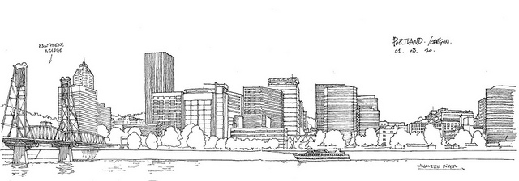
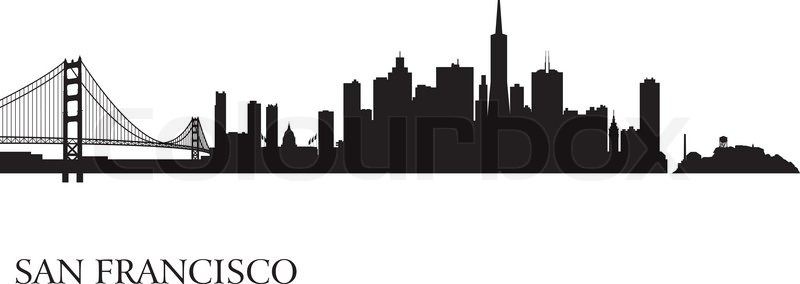
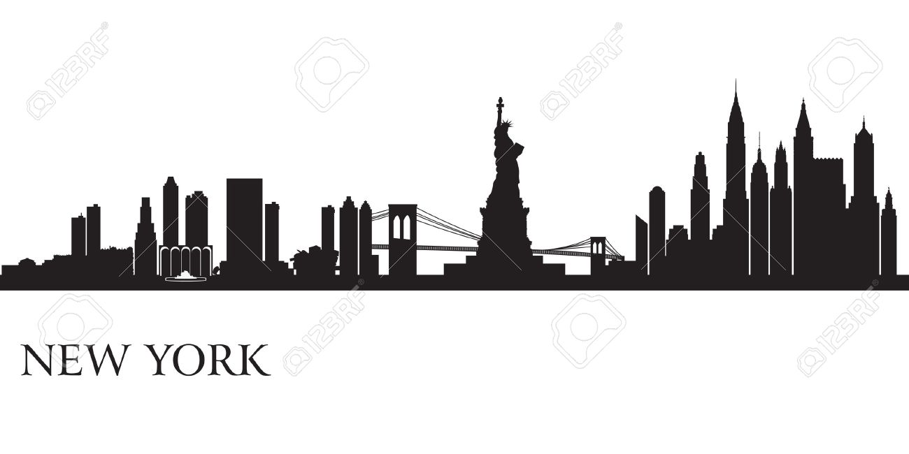

Portland is the largest city in the U.S. state of Oregon and the seat of Multnomah County. It is located in the Willamette Valley region of the Pacific Northwest, at the confluence of the Willamette and Columbia rivers. The city covers 145 square miles (376 km²) and had an estimated population of 619,360 in 2014,[7][9] making it the 28th most populous city in the United States. Approximately 2,348,247 people live in the Portland metropolitan statistical area (MSA), the 24th most populous MSA in the United States. Its Combined Statistical Area (CSA) ranks 17th with a population of 3,022,178. Roughly 60 percent of Oregon's population resides within the Portland metropolitan area.[10]
San Francisco, officially the City and County of San Francisco, is the cultural, commercial, and financial center of Northern California and the only consolidated city-county in California.[24] San Francisco encompasses a land area of about 46.9 square miles (121 km2)[25] on the northern end of the San Francisco Peninsula, which makes it the smallest county in the state. It has a density of about 18,187 people per square mile (7,022 people per km2), making it the most densely settled large city (population greater than 200,000) in the state of California and the second-most densely populated major city in the United States after New York City.[26] San Francisco is the fourth-most populous city in California, after Los Angeles, San Diego and San Jose, and the 13th-most populous city in the United States—with a Census-estimated 2014 population of 852,469.[21] The city and its surrounding areas are known as the San Francisco Bay Area, and are a part of the larger OMB designated San Jose-San Francisco-Oakland combined statistical area, the fifth most populous in the nation with an estimated population of 8.6 million.
New York—often called New York City or the City of New York to distinguish it from the State of New York, of which it is a part—is the most populous city in the United States[1] and the center of the New York metropolitan area, the premier gateway for legal immigration to the United States[9][10][11] and one of the most populous urban agglomerations in the world.[12][13] A global power city,[14] New York exerts a significant impact upon commerce, finance, media, art, fashion, research, technology, education, and entertainment, its fast pace[15] defining the term New York minute.[16] Home to the headquarters of the United Nations,[17] New York is an important center for international diplomacy[18] and has been described as the cultural and financial capital of the world.
